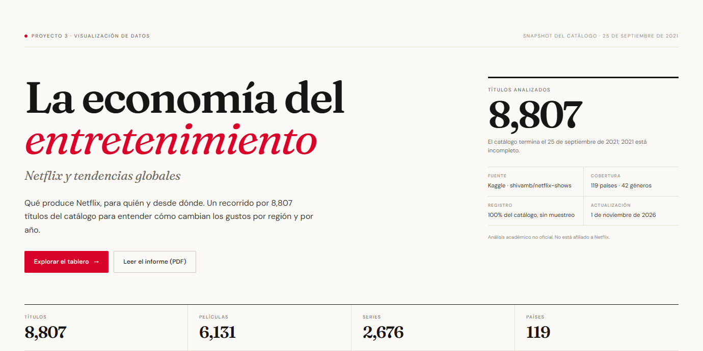
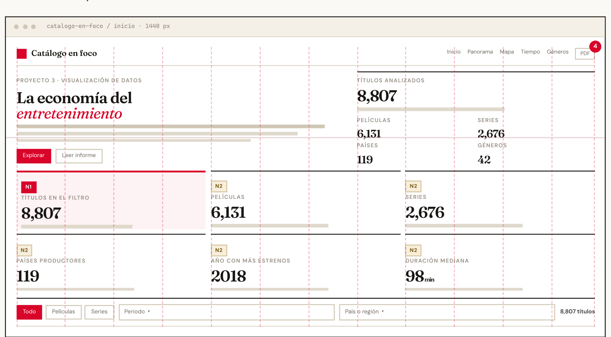
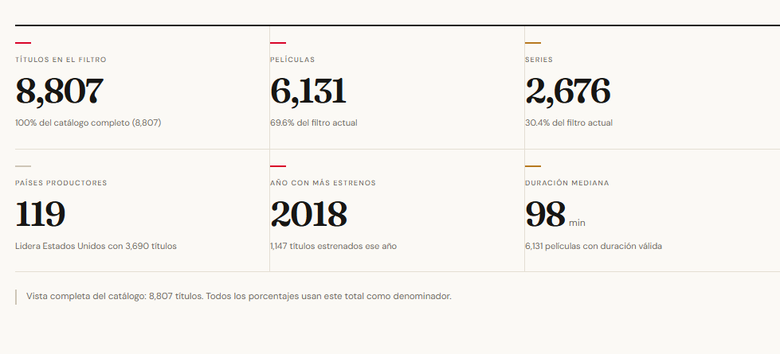
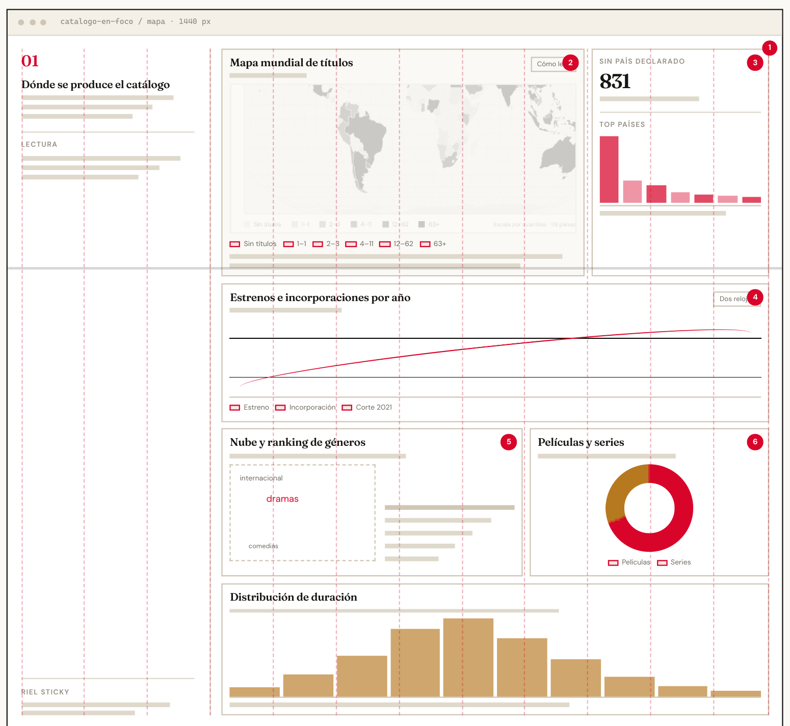
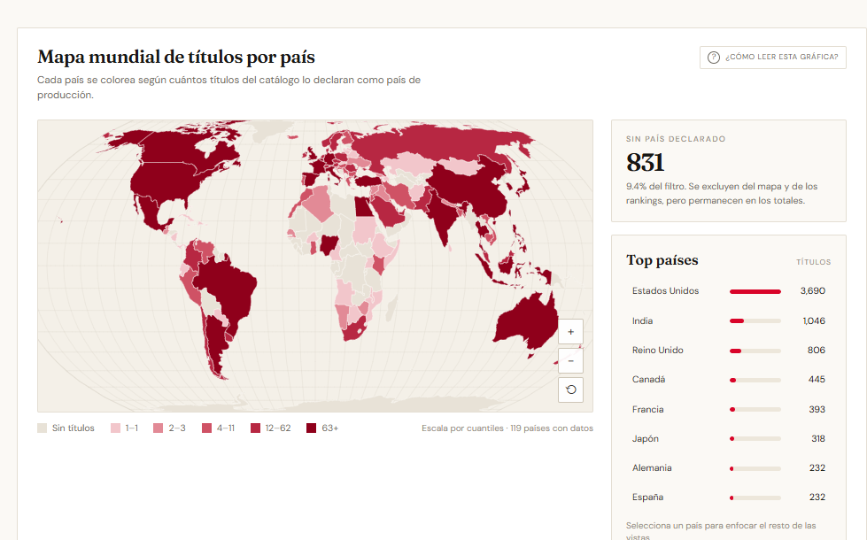
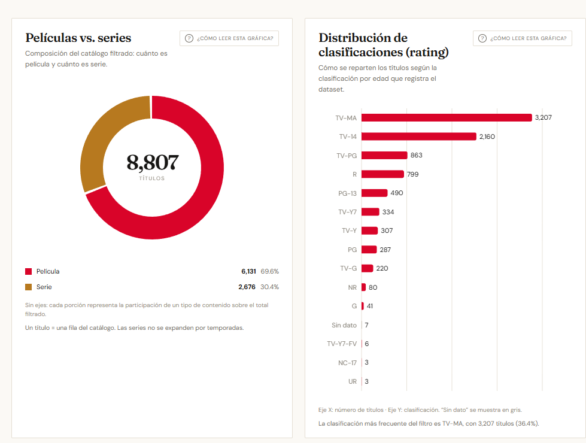
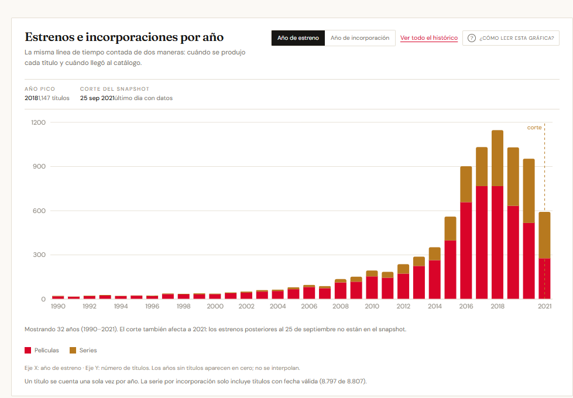
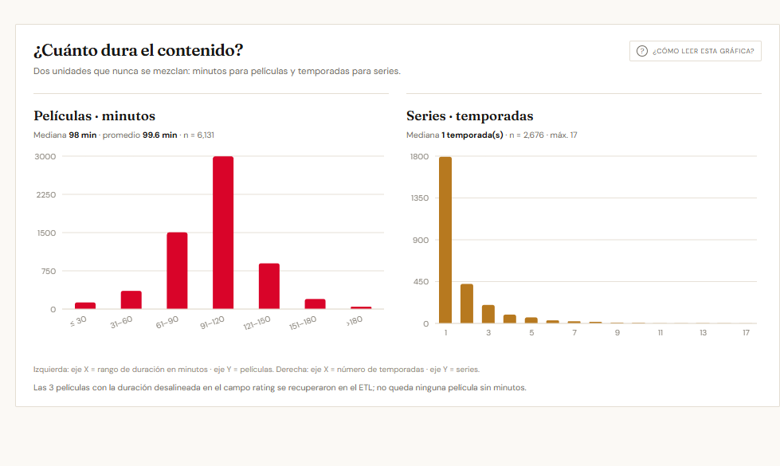

Del wireframe al tablero
Cómo las decisiones de la Fase 2 se convirtieron en componentes, estados y datos reales: la misma jerarquía, los mismos KPIs y la misma paleta, ahora en una aplicación que filtra 8,807 títulos.
100% del catálogo, sin muestreo.
Una lectura de inicio a método.
Cinco núcleo y cuatro complementarios.
Todo sale de dashboard.json.
Un árbol de carpetas que separa composición, cálculo, gráficas y estilos.
KPIs, gráficos y mapa construidos con React, Recharts y react-simple-maps.
Build de TypeScript, QA visual a 390 px y correspondencia con la Fase 2.

Contenido del informe
Este informe documenta la implementación, no la idea. Cada sección responde a una pregunta de la rúbrica y remite al archivo, al componente o a la captura que lo demuestra. El orden sigue el recorrido real: primero el tablero, después su estructura, luego el cálculo y al final la verificación.
El objetivo, el alcance y las tres promesas de la implementación.
La primera pantalla real, sus cifras y lo que no se ve.
Wireframe y dashboard, elemento por elemento.
Mapa, tiempo, géneros, formato y duración.
Árbol de carpetas y responsabilidad de cada bloque.
Del CSV al componente, con un solo estado filtrado.
Por qué React, Recharts, react-simple-maps y TypeScript.
Fórmulas, código y lugar de renderizado.
Una gráfica por pregunta y la marca elegida.
La serie temporal y el histograma de duración.
Fuente, escala, interacción y accesibilidad.
Tokens, contraste y tipografía aplicados en React.
Lo que falló, cómo se resolvió y qué se aprendió.
Decisiones, costos y deuda técnica documentada.
Aprendizajes y mapa de criterios de evaluación.
| Criterio | Puntos | Dónde se responde |
|---|---|---|
| Correspondencia wireframe ↔ dashboard | 25 | Secciones 02–03 · pp. 5–6 |
| Implementación de KPIs y gráficos | 25 | Secciones 07–10 · pp. 10–13 |
| Uso de la paleta de colores | 15 | Sección 11 · p. 14 |
| Estructura y legibilidad del código | 15 | Secciones 04–06 · pp. 7–9 |
| Documentación de la implementación | 20 | Todo el informe · pp. 3–17 |
La única variación de marca es la serie temporal: la Fase 2 proponía línea/área y la implementación usa barras apiladas. Se explica en la página 12.
Introducción
La Fase 3 no empieza con una hoja en blanco: empieza con un wireframe aprobado. El trabajo consistió en convertir esa estructura en una aplicación funcional sin perder lo que la hacía legible: un KPI principal, cuatro lecturas que lo explican, una gráfica por pregunta y una paleta que jerarquiza. La prioridad no fue “que se viera bonito”, sino que el código respetara las decisiones de diseño y pudiera demostrarlo.
El titular, el KPI principal y la evidencia conservan el orden N1–N3 del wireframe. La primera pantalla sigue terminando después de los filtros.
El total filtrado es el denominador de todo. Las cuatro lecturas secundarias —formato, origen, tiempo y duración— se calculan sobre ese mismo conjunto.
Papel cálido, tinta, rojo y ámbar; Fraunces para titulares y DM Sans para texto. Los tokens de la Fase 2 se convirtieron en variables CSS.
| Fase 2 | Fase 3 |
|---|---|
| Wireframe estático | Componentes React con estado y eventos. |
| Datos de referencia | dashboard.json generado por el ETL. |
| Paleta documentada | Variables CSS y constantes de gráfica. |
| Notas al margen | Panel “¿Cómo leer esta gráfica?” en cada tarjeta. |
| Cinco visualizaciones | Cinco núcleo + cuatro complementarias. |
Criterio de éxito. Si una persona puede repetir el recorrido de lectura de la Fase 2 en la aplicación —titular, KPI, mapa, tiempo, géneros, formato, duración— y llegar a las mismas conclusiones, la implementación es correcta.
La Fase 2 describió tres niveles. En la aplicación se traducen en un orden concreto de secciones y en un ancla de navegación para cada una.
Qué es el tablero y de qué dataset habla.
El total que sostiene todas las comparaciones.
Producción declarada por país y región.
Estreno, incorporación y mezcla de formato.
Calidad del dato, nulos y corte del snapshot.
Alcance. El tablero tiene 8,807 títulos, 119 países y 42 géneros. Se sirve como sitio estático: un JSON de 566 KB, sin backend, sin base de datos en el navegador y sin dependencia de una API externa. Esa decisión mantiene el proyecto reproducible y portátil; el costo es que actualizar los datos exige volver a ejecutar el ETL y el build.
El tablero implementado
La portada conserva la composición editorial de la Fase 2: marca, titular, ficha técnica, botones y franja de datos. No es una maqueta: los 8,807 títulos, las 6,131 películas y las 2,676 series se leen del JSON y se formatean en español de México.
Contenido máximo de 1380 px, margen fluido y una franja de cuatro cifras. En escritorio, el titular ocupa más ancho que la ficha; en móvil, la ficha baja y la franja se convierte en 2 × 2.
“Títulos en el filtro” sigue siendo la primera tarjeta y el número más grande. Las otras cinco tarjetas —películas, series, países, año y duración— comparten peso y se leen como una sola frase.
Papel #fbf9f5, tinta #171614, rojo #d90429 y ámbar #b7791f. No hay colores nuevos: solo se aplicaron los tokens de la Fase 2.
Lo que no se ve en la captura. Antes de renderizar, App.tsx descarga el JSON, valida que existan las filas y las dimensiones, y calcula un único objeto Derived con useMemo. Todos los KPIs, gráficas y tablas leen ese objeto. No hay cálculos duplicados ni cifras escritas a mano en el JSX.
| Cifra en pantalla | Campo del JSON | Valor | Nota de cálculo |
|---|---|---|---|
| Títulos del catálogo | meta.total_titulos | 8,807 | Entero · es-MX. |
| Películas | kpis.peliculas | 6,131 | Mismo denominador. |
| Países | kpis.paises_distintos | 119 | Sin país no cuenta. |
| Año con más estrenos | kpis.anio_mas_estrenos | 2018 · 1,147 | Año y conteo. |
| Última actualización | meta.snapshot | 25 sep 2021 | Fecha larga es-MX. |
Correspondencia · primera pantalla
La comparación no es metafórica: el wireframe de la Fase 2 y la captura del tablero comparten el orden de lectura. La implementación conservó la posición del titular, la ficha técnica, la franja de KPIs y la barra de filtros; cambió el material, no la estructura.


| Elemento del wireframe | Componente implementado | Qué se conservó |
|---|---|---|
| 1 · Titular y ficha | Hero.tsx | Titular editorial, subtítulo, ficha de fuente, cobertura, registro y actualización. |
| 2 · KPI principal | KpiGrid.tsx | Primera celda, acento rojo, cifra más grande y nota con el porcentaje del catálogo. |
| 3 · KPIs secundarios | KpiGrid.tsx | Películas, series, países, año de estreno y duración mediana; misma franja y mismo peso. |
| 4 · Filtros globales | Filters.tsx | Tipo, periodo y país o región; contador de títulos y chips de filtros activos. |
| 5 · Retícula | Section + global.css | Riel de 252 px, contenido flexible y escala de 4 px; en móvil, una sola columna. |
| 6 · Pliegue | Hero + HowToRead + Filters | La primera pantalla termina después de los filtros; el usuario decide si baja al mapa o al tiempo. |
El wireframe pedía fuente y cobertura; se añaden registro, snapshot y enlace al dataset para rastrear cada cifra.
Un botón descarga el PDF de la Fase 3: resuelve la entrega sin salir del tablero.
Una barra marca el avance en una página de once secciones; apoya la navegación, no la jerarquía.
La prueba de que no se movió nada: al recortar la captura a la altura de los filtros, la silueta coincide con el wireframe. Las adiciones viven dentro de esos bloques, no entre ellos.
Correspondencia · área de análisis
El cuerpo analítico también respeta el wireframe: riel de sección a la izquierda, mapa como selector, ranking lateral, tiempo, géneros y composición. La implementación añadió lecturas complementarias —clasificaciones, directores, patrones, hallazgos y método— sin mover el bloque principal ni cambiar la jerarquía.



| Bloque del wireframe | Componente implementado | Qué se conservó |
|---|---|---|
| 1 · Riel sticky | Section + .section-head | Número, título e introducción; se mantiene visible al hacer scroll en escritorio. |
| 2 · Mapa selector | MapChart.tsx | Color por conteo, leyenda por cuantiles, clic para filtrar y zoom. |
| 3 · Ranking lateral | MapChart.tsx | Top países con barra proporcional y valor directo; los nombres largos caben. |
| 4 · Tiempo | TimeSeriesChart.tsx | Estreno vs. incorporación, corte del snapshot y pico anual. |
| 5 · Géneros | WordCloudChart.tsx + TopGenresChart | Nube para la impresión y ranking con cifras exactas; lista ordenada como alternativa. |
| 6 · Formato y duración | TypeDonut.tsx + DurationCharts.tsx | Dona de dos categorías; histograma de minutos y distribución de temporadas separados. |
Alcance ampliado, no desviado. Las secciones de clasificaciones, directores, patrones, hallazgos y metodología se añadieron después del bloque principal. No compiten con el KPI ni con el mapa: viven en el nivel N3 del recorrido y se apoyan en los mismos datos filtrados.
Estructura del proyecto
La organización no sigue el orden del wireframe, sino el flujo del dato: la aplicación compone, la carpeta lib calcula, charts dibuja y styles aplica el sistema visual. Esa separación permite cambiar una gráfica sin tocar los KPIs y cambiar un token sin recorrer veinte componentes.
Jhon/ ├─ src/ │ ├─ App.tsx composición, estado y fetch │ ├─ main.tsx montaje y fuentes │ ├─ types.ts contratos de datos │ ├─ components/ │ │ ├─ Header.tsx navegación y progreso │ │ ├─ Hero.tsx portada y cómo leer │ │ ├─ Filters.tsx filtros globales │ │ ├─ KpiGrid.tsx seis indicadores │ │ ├─ ui.tsx Section, ChartCard, Legend │ │ ├─ Findings.tsx hallazgos globales │ │ ├─ Methodology.tsx calidad y límites │ │ ├─ Footer.tsx créditos y documentos │ │ └─ charts/ │ │ ├─ MapChart.tsx mapa + ranking │ │ ├─ TimeSeriesChart.tsx │ │ ├─ TypeDonut.tsx │ │ ├─ Rankings.tsx países y géneros │ │ ├─ DurationCharts.tsx │ │ ├─ RatingsChart.tsx │ │ ├─ WordCloudChart.tsx │ │ ├─ Heatmaps.tsx década y mes │ │ └─ DirectorsTable.tsx │ ├─ lib/ │ │ ├─ aggregate.ts filtros y KPIs │ │ ├─ format.ts es-MX │ │ └─ palette.ts colores de gráfica │ ├─ hooks/useUi.ts scroll, foco, contadores │ └─ styles/global.css tokens y responsive ├─ public/data/dashboard.json datos del tablero ├─ data/quality_report.json calidad del ETL ├─ etl/build_dataset.py CSV → DuckDB → JSON └─ docs/generate_pdf_fase3.py este informe
src/App.tsx: compone la página, guarda el estado de filtros y dispara el fetch. No calcula KPIs.components/: interfaz y accesibilidad. Cada tarjeta recibe datos ya calculados.components/charts/: nueve módulos de visualización; Recharts, SVG y CSS Grid según la tarea.lib/aggregate.ts: el único lugar donde se filtra y se agrega. Devuelve un objeto Derived completo.lib/format.ts: números, porcentajes y fechas en es-MX.lib/palette.ts: colores que Recharts necesita como cadenas, no como variables CSS.hooks/useUi.ts: progreso de lectura, sección activa, contadores y movimiento reducido.public/data/dashboard.json: filas compactas, dimensiones, agregados y reporte de calidad.Ningún componente suma títulos por su cuenta. Si una cifra aparece en dos lugares, sale del mismo campo de Derived.
TitleRow es una tupla de 12 posiciones; Derived describe cada salida. TypeScript estricto evita confusiones entre tipos, países y años.
La paleta vive en :root y en palette.ts. No se usan colores sueltos en los componentes, salvo los cinco tramos del mapa.
| Si hay que cambiar… | Se toca | No se toca |
|---|---|---|
| Un color de la interfaz | src/styles/global.css · :root | Los componentes. |
| Un color de gráfica | src/lib/palette.ts | Recharts ni el CSS. |
| Una fórmula o un filtro | src/lib/aggregate.ts | Los componentes de gráfica. |
| Una visualización | src/components/charts/ | Los KPIs ni el estado global. |
| El dataset o su limpieza | etl/build_dataset.py · npm run etl | Ningún archivo de src/. |
Esa separación permite auditar el tablero: cada pregunta de la rúbrica tiene una carpeta y un archivo donde vivir.
Arquitectura y flujo de datos
El tablero es una aplicación estática con un flujo unidireccional. El ETL produce un JSON; React lo descarga una vez; el estado de filtros dispara un cálculo memoizado; las vistas reciben el resultado. No hay llamadas por gráfica, ni estado duplicado, ni cifras que se recalculen en dos lugares.
netflix_titles.csv, 8,807 filas y 12 columnas.
Limpieza, normalización y tablas puente.
dashboard.json con filas compactas y agregados.
Tipo, periodo y país en useState.
Un objeto por filtro; todas las vistas lo leen.
App.tsx · carga y validacióncódigo real
const [data, setData] = useState<DashboardData | null>(null);
useEffect(() => {
fetch("./data/dashboard.json")
.then((r) => {
if (!r.ok) throw new Error(`HTTP ${r.status}`);
return r.json() as Promise<DashboardData>;
})
.then((payload) => {
if (!payload?.titles?.rows?.length) throw new Error("Sin filas");
setData(payload);
});
}, []);
App.tsx · estado y derivacióncódigo real
const [filters, setFilters] = useState(DEFAULT_FILTERS);
const derived = useMemo(() => derive(data, filters), [data, filters]);
// El mapa conserva todos los países como selector:
const mapDerived = useMemo(
() => derive(data, { ...filters, place: { kind: "all" } }),
[data, filters],
);
El dataset es un snapshot cerrado. Un JSON estático elimina servidores, credenciales y latencia, y hace que el tablero se pueda publicar en GitHub Pages. El costo: actualizar datos exige repetir ETL y build.
Es una sola página con secciones ancladas. El hash permite enlazar #mapa o #tiempo sin cargar otra aplicación. El costo: no hay división del bundle por ruta.
El estado vive en App y baja por props. Con una sola pantalla y un solo filtro, Redux o Zustand añadirían ceremonia sin resolver un problema real.
La excepción documentada. El mapa no usa derived cuando hay un país seleccionado: usa mapDerived, calculado con place: all. Así el mapa sigue mostrando todos los países y funciona como selector, mientras el resto de las vistas se enfoca en el país elegido. Es una decisión de producto implementada en una línea de App.tsx.
Derived| Campo | Forma | Quién lo consume |
|---|---|---|
count | number | KPI principal, contador de filtros y encabezados de sección. |
movies · series | number · number | Tarjetas 2 y 3; dona TypeDonut. |
topCountries | CountryStat[] | Ranking lateral del mapa y tabla de países. |
topGenres | GenreStat[] | Nube de palabras y ranking de géneros. |
byYearRelease | YearStat[] | TimeSeriesChart en modo estreno; hitos anuales. |
byYearAdded | YearStat[] | TimeSeriesChart en modo incorporación. |
movieDuration | { n, avg, median } | Tarjeta 6, tooltip de países e histograma. |
last5 | { from, to, count, share } | Tarjeta 5 y franja de hitos (2017–2021). |
noCountry | number | Tarjeta “sin país” del mapa y metodología. |
Ningún componente recibe filas crudas: todos reciben este objeto o una parte de él. Por eso una gráfica no puede “inventar” un denominador distinto al del KPI.
Justificación técnica
El stack se eligió por adecuación a la tarea, no por novedad. React y TypeScript sostienen la composición y los contratos; Recharts cubre las gráficas cartesianas; react-simple-maps resuelve el mapa sin tiles; d3-cloud calcula la nube; Fontsource evita depender de Google Fonts. Cada elección tiene una alternativa descartada y un costo asumido.
| Herramienta | Versión | Uso en el tablero | Por qué se eligió / alternativa descartada |
|---|---|---|---|
| React + Vite | 19.3 · 7.3 | Composición, estado y build. | Componentes declarativos y recarga instantánea. Se descartó Next.js: no hay SSR, rutas ni API que lo justifiquen. |
| TypeScript | 5.9 · strict | Contratos de filas, dimensiones y KPIs. | Una tupla de 12 posiciones se vuelve legible y verificable. Se descartó JavaScript: el costo de un índice mal usado era mayor. |
| Recharts | 3.10 | Dona, barras, serie temporal e histograma. | Gráficas SVG declarativas y ResponsiveContainer. Se descartaron Chart.js (canvas, menos integración React) y Plotly (peso). |
| react-simple-maps | 3.0 | Mapa coroplético y zoom. | TopoJSON local, eventos por geografía y control de proyección. Se descartó Leaflet: necesita tiles, CSS extra y no aporta para un mapa sin calles. |
| world-atlas | 2.0 | Geometría countries-110m.json. | TopoJSON liviano y offline. Se descartó un GeoJSON completo: más peso para la misma lectura. |
| d3-cloud | 1.2 | Nube de géneros. | Layout de palabras probado. Se descartó construir el empaquetado a mano: no era el objetivo del proyecto. |
| Fontsource | 5.3 | Fraunces y DM Sans locales. | Sin peticiones a Google Fonts, reproducible y sin FOUT de red. Se descartó el CDN por privacidad y disponibilidad. |
| CSS propio | — | Tokens, retícula, responsive. | Variables CSS y 3 000 líneas legibles. Se descartó Tailwind: el sistema ya estaba definido y no se quería reescribir en utilidades. |
La dependencia incómoda. react-simple-maps@3 declara compatibilidad con React 18 y el proyecto usa React 19. La instalación se hizo con --legacy-peer-deps y se verificó el mapa, el zoom y los eventos en el navegador. Está documentado en el README para que otra persona pueda reproducirlo.
El criterio. Ninguna librería entra para “tener más”: si una tarea se resuelve con CSS Grid —las matrices de década y mes— no se añade un paquete de heatmaps. Esa disciplina mantiene el bundle y la superficie de mantenimiento bajo control.
Terminal · Windows PowerShellcomandos reales
# 1 · dependencias (react-simple-maps declara React 18) npm install --legacy-peer-deps # 2 · datos: CSV → DuckDB → JSON npm run etl # 3 · desarrollo y build de producción npm run dev npm run build # 4 · informes en PDF npm run pdf:fase3
--legacy-peer-deps evita que npm rechace el árbol por el peer de React 18.dashboard.json y quality_report.json desde el CSV; si el esquema cambia, el tablero falla en la validación.tsc --noEmit antes de Vite; un tipo mal usado detiene la entrega.El proyecto no necesita variables de entorno, credenciales ni servicios externos: clonar la carpeta y ejecutar los cuatro pasos reproduce el tablero y los informes.
Implementación de KPIs
El KPI principal de la Fase 2 —“Títulos en el filtro”— se implementó como derived.count: la longitud del arreglo que sobrevive a los tres filtros. Las cuatro lecturas secundarias salen del mismo recorrido de datos. La tarjeta solo formatea y muestra; no calcula.
| KPI de la Fase 2 | Fórmula implementada | Campo de Derived | Dónde se renderiza |
|---|---|---|---|
| N1 · Títulos en el filtro | rows.length tras tipo + periodo + lugar. | count | Primera tarjeta de KpiGrid y contador de filtros. |
| N2 · Mezcla de formato | Conteo de type === 0 y type === 1; porcentaje sobre count. | movies, series | Tarjetas 2 y 3; dona TypeDonut. |
| N2 · Concentración geográfica | Países con count > 0; líder por conteo. | countryCount, topCountries | Tarjeta 4; mapa y ranking lateral. |
| N2 · Dinámica temporal | Máximo de byYearRelease.total; títulos con addedYear >= 2017. | peakRelease, last5 | Tarjeta 5; serie temporal y franja de hitos. |
| N2 · Duración mediana | Mediana de durationMin para películas con dato. | movieDuration.median | Tarjeta 6; histograma de minutos. |
aggregate.ts · filtro y cálculocódigo real
const rows = data.titles.rows.filter((row) =>
matchesType(row, filters.type) &&
matchesPeriod(row, filters.period) &&
matchesPlace(row, filters.place, countries),
);
const count = rows.length;
for (const row of rows) {
const [type, , , , durationMin] = row;
if (type === 0) movies += 1; else series += 1;
if (type === 0 && durationMin !== null) durations.push(durationMin);
}
const movieDuration = {
n: durations.length,
avg: durations.reduce((a, b) => a + b, 0) / durations.length,
median: median(durations),
};
KpiGrid.tsx · tarjeta principalcódigo real
<Kpi
label="Títulos en el filtro"
value={derived.count}
note={`${fmtPct(catalogShare)} del catálogo completo`}
accent="red"
start={inView}
/>
Reglas que no se negocian. El denominador es el total filtrado; los porcentajes se formatean con Intl.NumberFormat("es-MX"); los títulos sin país o sin director no se imputan; 2021 se marca como incompleto.
useCountUp interpola la cifra al entrar en pantalla. Con prefers-reduced-motion salta directo al valor final.
Si el filtro no devuelve títulos, filter-empty explica el motivo y ofrece “Limpiar filtros”; las tarjetas no muestran cero sin contexto.
Cada tarjeta tiene etiqueta, valor y nota; el contador de filtros usa aria-live="polite" para anunciar cambios.
| Filtro activo | Títulos | % del catálogo | Lectura |
|---|---|---|---|
| Sin filtro | 8,807 | 100.0% | El catálogo completo; denominador de la portada. |
| Películas | 6,131 | 69.6% | Dos tercios del catálogo son películas. |
| Películas · 2010–2019 | 4,184 | 47.5% | La década reciente concentra casi la mitad del catálogo. |
| Películas · 2010–2019 · EE. UU. | 1,843 | 20.9% | El país líder dentro de esa década. |
| Series · 2010–2019 · India | 56 | 0.6% | El filtro más estrecho: una lectura distinta del mismo tablero. |
Las cinco filas salen de la misma función derive(), con el periodo evaluado sobre release_year y el país sobre la lista multivaluada de countries. El porcentaje siempre divide entre 8,807, nunca entre el subconjunto, para que las columnas sean comparables.
Implementación de gráficos
La correspondencia es directa: el mapa responde “dónde”, la dona “cuánto de cada formato”, las barras “quién concentra”, la serie temporal “cómo cambió” y el histograma “cómo se distribuye”. Cuatro de las cinco marcas coinciden exactamente con la Fase 2; la serie temporal se explica en la página siguiente.
| Pregunta / KPI | Fase 2 | Implementación | Por qué se mantiene |
|---|---|---|---|
| ¿Cuánto hay y dónde? Títulos en el filtro | Tarjeta + mapa | KpiGrid + MapChart | La cifra ancla; el mapa descompone el volumen y filtra el resto. |
| ¿Películas o series? Mezcla de formato | Dona | TypeDonut · Recharts PieChart | Dos categorías, parte-todo simple y total visible al centro. |
| ¿Qué países concentran? Concentración geográfica | Barras horizontales | TopCountriesChart · BarChart horizontal | Ordena magnitudes y permite leer nombres largos sin rotar. |
| ¿Cómo cambió? Dinámica temporal | Línea / área | TimeSeriesChart · barras apiladas | Misma pregunta y mismo eje; cambia la marca para no sugerir continuidad entre años discretos. |
| ¿Cómo se distribuye? Duración mediana | Histograma | DurationCharts · BarChart | Rangos de minutos para películas; temporadas para series, nunca mezclados. |
<details> y botones; la nube tiene lista ordenada.Gráficas complementarias. Clasificaciones, directores, patrones por década/mes y hallazgos se añadieron como lecturas N3. No reemplazan las cinco principales ni cambian el orden de lectura.
| Género | Títulos | % del filtro |
|---|---|---|
| Películas internacionales | 2,752 | 31.25% |
| Dramas | 2,427 | 27.56% |
| Comedias | 1,674 | 19.01% |
| Series internacionales | 1,351 | 15.34% |
| Documentales | 869 | 9.87% |
| Acción y aventura | 859 | 9.75% |
| Series dramáticas | 763 | 8.66% |
| Películas independientes | 756 | 8.58% |
La nube comunica la impresión; esta tabla y el ranking lateral dan la cifra exacta. Ambos leen derived.topGenres y derived.byGenre, así que no pueden discrepar.
Por qué la suma supera 100%. Un título puede pertenecer hasta a tres géneros. Cada género cuenta por separado sobre el total filtrado; el tablero lo advierte al pie de la nube y en la metodología.
Tiempo y distribución
La Fase 2 proponía línea/área para la dinámica temporal. La implementación usa barras apiladas: la pregunta es la misma —cómo cambió el catálogo y dónde están los picos—, pero la barra evita sugerir continuidad entre años discretos y conserva la separación entre películas y series. Es la única diferencia de marca respecto del informe de diseño y no altera la jerarquía.


release_year es cuándo se produjo el título; date_added es cuándo entró al catálogo. El selector no mezcla ambos ejes y el texto lo advierte.
2021 está incompleto. La línea de referencia y la nota al pie evitan leer la caída del último año como una tendencia real.
Minutos solo para películas; temporadas solo para series. El tablero nunca promedia 98 minutos con 1 temporada.
Por qué la barra apilada. La línea/área de la Fase 2 priorizaba la forma de la tendencia; la barra apilada prioriza el volumen anual y la composición por formato. Con 32 años visibles (1990–2021), la barra permite comparar 2018 con 2019 sin interpolar y mantiene el pico de estrenos (2018, 1,147) y el de incorporaciones (2019, 2,016) como referencias legibles. Si se quisiera recuperar la línea, el cambio está aislado en TimeSeriesChart.tsx.
Estrenos · top 5 por año de producción
| Año | Películas | Series | Total |
|---|---|---|---|
| 2018 | 767 | 380 | 1,147 |
| 2017 | 767 | 265 | 1,032 |
| 2019 | 633 | 397 | 1,030 |
| 2020 | 517 | 436 | 953 |
| 2016 | 658 | 244 | 902 |
Incorporaciones · top 5 por fecha de alta
| Año | Películas | Series | Total |
|---|---|---|---|
| 2019 | 1,424 | 592 | 2,016 |
| 2020 | 1,284 | 595 | 1,879 |
| 2018 | 1,237 | 412 | 1,649 |
| 2021 | 993 | 505 | 1,498 |
| 2017 | 839 | 349 | 1,188 |
Los dos relojes no coinciden: el pico de estrenos es 2018 y el de incorporaciones es 2019. En 2021 las altas llegan a 1,498 títulos aun con el corte de septiembre; por eso la comparación anual se detiene ahí y se marca como año incompleto.
Implementación del mapa
El mapa es la visualización obligatoria de la Fase 2 y una de las piezas centrales del tablero. Responde dónde se produce el catálogo y, al mismo tiempo, funciona como control: un clic en un país enfoca el resto de las vistas. La fuente es local, la escala es por cuantiles y la interacción es accesible por teclado.
world-atlas/countries-110m.json (TopoJSON) con react-simple-maps y topojson-client.dimensions.countries del JSON, con nombre, etiqueta, ISO3, ISO numérico y región.id numérico de la geografía se cruza con isoN mediante un Map. Los países sin geometría siguen en el ranking y en el filtro.MapChart.tsx · unión y escalacódigo real
const byIso = useMemo(() => {
const map = new Map<number, CountryStat>();
stats.forEach((s) => map.set(s.isoN, s));
return map;
}, [stats]);
const q = (p: number) =>
counts[Math.floor((counts.length - 1) * p)];
const breaks = [q(0.2), q(0.4), q(0.6), q(0.8)];
tabIndex, role="button", aria-label y activación con Enter/Espacio.Honestidad del dato. El mapa cuenta producción declarada, no audiencia ni ingresos. Un título puede declarar varios países, así que la suma del mapa supera el total del catálogo. El ranking y la tarjeta de “sin país” hacen visible esa regla; no se oculta en una nota al pie.
Cortes por cuantiles · 119 países con títulos
| 1 | 37 países | Un solo título declarado. | |
| 2–3 | 14 países | Producción testimonial. | |
| 4–11 | 20 países | Presencia sostenida. | |
| 12–62 | 24 países | Mercados consolidados. | |
| 63+ | 24 países | Los grandes productores. | |
| 0 | — | Sin títulos en el filtro actual. |
Títulos por región · lectura agregada
| Región | Títulos | % |
|---|---|---|
| América del Norte | 3,918 | 44.5% |
| Asia | 2,439 | 27.7% |
| Europa | 1,796 | 20.4% |
| América Latina y el Caribe | 444 | 5.0% |
| África | 311 | 3.5% |
| Oceanía | 187 | 2.1% |
La suma por región (9,095) supera el total del catálogo (8,807) porque un título puede declarar países de más de una región; 831 títulos no declaran país y quedan fuera del mapa, pero siguen en los totales. La escala por cuantiles evita que Estados Unidos aplaste a los 37 países con un solo título.
Paleta y estilos
La paleta no se reinterpretó: se trasladó. El papel cálido, la tinta, el rojo y el ámbar viven en :root como variables CSS y en palette.ts como constantes para Recharts. El resultado es que un cambio de token se propaga a la interfaz y a las gráficas sin buscar hex sueltos.
#fbf9f5Fondo cálido y tarjetas. 70% de la superficie.
#171614Texto, ejes, títulos y bordes. 17.2:1 sobre papel.
#d90429KPI principal, películas, selección y foco. 4.99:1.
#b7791fSeries y acentos. 3.46:1: solo marcas grandes.
| Token | Valor | Uso |
|---|---|---|
--paper | #fbf9f5 | Fondo de página y tarjetas. |
--ink | #171614 | Texto, ejes y bordes principales. |
--red | #d90429 | KPI, películas, foco y selección. |
--red-deep | #9e0018 | Hover del mapa y énfasis profundo. |
--amber | #b7791f | Series, corte y acentos secundarios. |
--muted | #6f6b63 | Notas, leyendas y texto secundario. |
--line | #e4ded3 | Bordes y separadores. |
| Combinación | Ratio | Uso |
|---|---|---|
| Tinta sobre papel | 17.2:1 | Texto y ejes · AAA |
| Rojo sobre papel | 4.99:1 | Texto normal · AA |
| Blanco sobre rojo | 5.25:1 | Botones y chips · AA |
| Gris medio sobre papel | 5.04:1 | Notas y leyendas · AA |
| Ámbar sobre papel | 3.46:1 | Solo marcas grandes · AA no texto |
| Ámbar oscuro sobre papel | 5.62:1 | Texto pequeño · AA |
Fraunces para titulares y cifras; DM Sans para texto, etiquetas y notas. Ambas se cargan localmente con Fontsource.
1380 px de ancho máximo, riel de 252 px, cabecera de 68 px y escala de espacios de 4 px. Radio de 2 px.
Contadores y revelados suaves; prefers-reduced-motion los desactiva. El foco visible nunca depende solo del color.
Aa g
400 · 500 · 600 · 700. Titulares, cifras KPI y subtítulos. Carga local desde Fontsource: sin peticiones a Google Fonts ni FOUT de red.
Aa 8,807
400 · 500 · 700. Párrafos, notas y leyendas. Las cifras usan tabular-nums para alinear tablas y ejes.
Los estados no dependen solo del color: el chip activo cambia de fondo y de contraste, y el foco añade un contorno de 1.2 pt que se mantiene sobre cualquier superficie.
Deuda visible. La tinta existe como #171614 en CSS y como #171717 en palette.ts. La diferencia es imperceptible, pero debería unificarse en un solo token compartido. Se documenta aquí para no presentar el sistema como perfecto.
Problemas y soluciones
Documentar solo lo que salió bien sería propaganda. Estos son los problemas reales que aparecieron al implementar el wireframe, la causa técnica y la solución que quedó en el código. Ninguno se resolvió “ocultando” el síntoma en la interfaz.
| Problema | Causa | Solución implementada | Evidencia |
|---|---|---|---|
| Conflicto de peer dependency | react-simple-maps@3 declara React 18; el proyecto usa React 19. | Instalación con --legacy-peer-deps y verificación manual del mapa, zoom y eventos. | README · package.json |
| Países sin geometría | El TopoJSON de 110 m no incluye algunas islas o territorios pequeños. | El mapa los omite, pero el ranking lateral y el filtro los conservan; la nota lo advierte. | MapChart.tsx |
| El mapa se colapsaba al filtrar | Si el filtro de país se aplicaba al mapa, solo quedaba un país visible y se perdía el selector. | mapDerived se calcula con place: all; el resto de las vistas usa derived. | App.tsx · p. 8 |
| Porcentajes que suman más de 100% | Países y géneros son multivaluados: un título puede tener hasta 12 países y 3 géneros. | El denominador es el total filtrado y cada categoría cuenta por separado; la interfaz lo explica. | aggregate.ts · metodología |
| 2021 parece una caída | El snapshot termina el 25 de septiembre de 2021; el año está incompleto. | Línea de corte, nota al pie y texto explícito; no se interpola ni se extrapola. | Serie temporal · p. 12 |
| Filtros sin resultados | Combinaciones de tipo, periodo y país pueden devolver cero títulos. | filter-empty con explicación y “Limpiar filtros”; EmptyState en cada gráfica. | App.tsx · ui.tsx |
| Desbordamiento a 390 px | Tablas de calidad, matrices y rankings anchos. | .table-scroll con tabIndex=0 y role=region; el resto se apila en una columna. | QA móvil · p. 5 |
Tipos de d3-cloud | El paquete no incluye declaraciones TypeScript. | Declaración local en src/types/d3-cloud.d.ts; el resto del proyecto sigue en strict. | tsconfig.json |
| Bundle de ≈900 kB | Recharts, react-simple-maps y world-atlas en un solo chunk. | Se acepta para uso local/académico; queda documentado el próximo paso: React.lazy y manualChunks. | Salida de vite build |
Lo que no se hizo. No se añadieron tests automatizados ni un pipeline de capturas. La verificación fue build de TypeScript + QA visual manual en tres anchos. Es una deuda real y se reconoce en la reflexión técnica.
Lo que sí se evitó. No se imputaron países ni directores faltantes, no se inventaron ingresos y no se ocultó el 2021 incompleto. Los límites del dataset se muestran en la interfaz, no solo en el informe.
| Verificación | Cómo se comprobó | Resultado |
|---|---|---|
| Tipos y build | npm run build ejecuta tsc --noEmit antes de Vite. | Sin errores. |
| Datos reales | 8,807 filas en dashboard.json contra el CSV de origen. | Coinciden. |
| Escritorio 1440 px | Retícula, riel sticky, mapa y rankings en una sola pasada. | Sin solapamientos. |
| Móvil 390 px | Ancho mínimo, tablas con .table-scroll y KPIs en 2 × 2. | Sin desbordamiento. |
| Teclado | Mapa, filtros, <details> y zoom con Tab, Enter y Espacio. | Recorrido completo. |
| Contraste | Pares de la paleta sobre papel y sobre rojo. | AA en texto. |
| Movimiento reducido | Contadores y revelados con prefers-reduced-motion. | Se desactivan. |
| Documentos | Los tres PDF se sirven desde public/docs y responden 200. | Descargan. |
El checklist se ejecutó sobre la versión que genera este informe; no sustituye una suite de pruebas, pero cubre los tres anchos declarados.
Reflexión técnica
La implementación confirma una idea: un buen wireframe no se “copia” al código, se convierte en un contrato. Cuando la jerarquía, los tokens y las reglas de cálculo están escritos, cada componente tiene una responsabilidad clara. Lo que sigue es el balance honesto entre lo que funcionó, lo que se pagó y lo que se cambiaría.
derive(). KPIs, gráficas y tablas comparten denominador; no hay cifras contradictorias.TitleRow y el objeto Derived hicieron visibles los errores antes del navegador.palette.ts mantienen hex separados; una fuente única sería más limpia.Vitest para derive() y Playwright para el recorrido de filtros, el mapa y los estados vacíos.
Un archivo tokens.json que genere las variables CSS y las constantes de palette.ts.
React.lazy para las gráficas complementarias y manualChunks para separar Recharts y el mapa.
Un script de actualización que valide el CSV, ejecute el ETL y compare el reporte de calidad antes de publicar.
La lección principal. El mayor riesgo no era que una gráfica se viera distinta, sino que el tablero dijera cosas distintas en dos lugares. La decisión de calcular todo una vez y tipar la salida eliminó ese riesgo. La estética se sostuvo porque estaba escrita; la lógica se sostuvo porque estaba centralizada.
Pregunta, audiencia, objetivos y límites del dato. El tablero debía describir el catálogo, no estimar audiencia ni ingresos.
KPI principal, cuatro secundarios, una gráfica por pregunta, paleta, tipografía, retícula y wireframes aprobados.
Componentes, estado único, mapa interactivo, accesibilidad y verificación. La misma jerarquía, ahora con datos reales.
Conclusión y verificación
El tablero está implementado y documentado. La Fase 3 no consistió en añadir adornos, sino en probar que las decisiones de la Fase 2 resistían el contacto con datos reales, estados de filtro, pantallas pequeñas y limitaciones del navegador. El resultado conserva la jerarquía, los KPIs y la estética; las diferencias están explicadas, no escondidas.
El wireframe se volvió útil cuando cada bloque tuvo un componente y una regla de datos.
8,807 títulos, 119 países y 42 géneros: el tablero no necesita cifras inventadas para verse completo.
Tablas, teclado, contraste y movimiento reducido se resolvieron en la arquitectura, no al final.
Este informe explica qué se hizo, dónde vive y qué falta; no solo muestra capturas.
| Criterio | Pts. | Evidencia |
|---|---|---|
| Correspondencia wireframe ↔ dashboard | 25 | Pp. 5–6 · figuras 1–2 |
| Implementación de KPIs y gráficos | 25 | Pp. 10–13 · código |
| Uso de la paleta de colores | 15 | P. 14 · tokens |
| Estructura y legibilidad del código | 15 | Pp. 7–9 · árbol |
| Documentación de la implementación | 20 | Todo el informe |
La única variación de marca es la serie temporal (barras apiladas en lugar de línea/área), explicada en la página 12. El resto de las decisiones de la Fase 2 se conserva.
| Archivo | Contenido | Estado |
|---|---|---|
docs/Implementacion_Fase3.pdf | Este informe · 17 páginas | Generado y verificado. |
docs/Diseno_Fase2.pdf | Wireframe y sistema visual · 13 páginas | Aprobado en la fase anterior. |
docs/Justificacion_Fase1.pdf | Pregunta, objetivos y ETL · 12 páginas | Entregado. |
public/data/dashboard.json | Datos del tablero · 8,807 filas | Generado por el ETL. |
data/quality_report.json | Calidad por campo y anomalías | Base de la sección de método. |
README.md | Reproducción y decisiones técnicas | Actualizado con la Fase 3. |
Los tres informes comparten el mismo sistema editorial y la misma fuente de datos; ninguno cita cifras de otro proyecto. El tablero se sirve junto con los PDF desde public/docs.